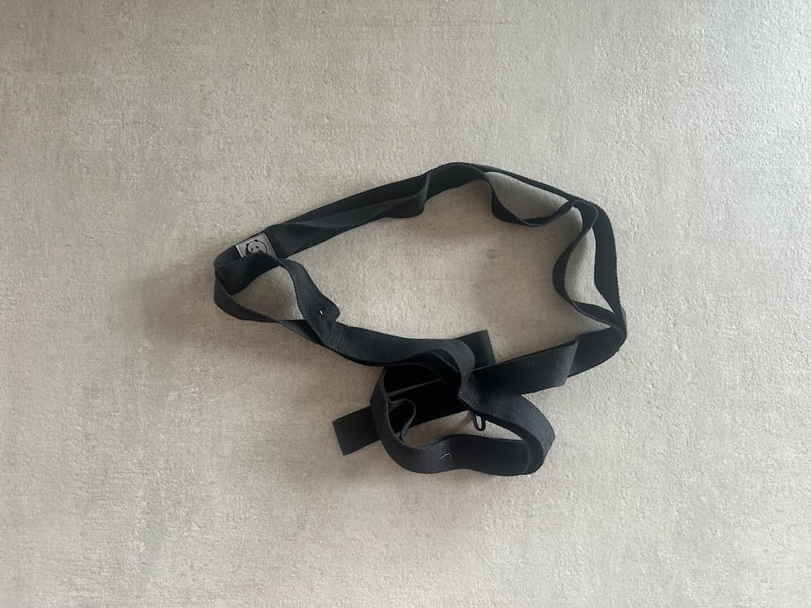

Alças multi-loop: o equipamento que eu amei odiar
Nas fases mais avançadas da recuperação, alongar vira praticamente um trabalho em tempo integral. Essa alça simples foi, ao mesmo tempo, o equipamento que eu mais odiei e a ferramenta mais útil do meu arsenal.

Um gatilho visual (e um aviso)
Eu percebi cedo que, se eu não visse o equipamento, eu não usaria. Eu deixava a alça jogada no braço do sofá ou na mesinha de cabeceira. Ela virou um gatilho visual: sempre que eu via, lembrava da minha rotina de flexão.
O lado ruim? Como eu usava o tempo todo nas sessões de flexão - aquela parte da reabilitação em que você está sempre “brigando” com rigidez e tecido cicatricial - a alça virou sinônimo de dor. Teve dia em que eu realmente odiava olhar para ela. Mas é exatamente por isso que funciona: ela representa o trabalho difícil que realmente gera resultado.
“Eu usei essa alça em praticamente toda sessão de flexão. Era a parte mais difícil do meu dia, e o equipamento virou um símbolo dessa luta - mas eu não teria recuperado minha amplitude sem ela.”
Por que eu escolhi a multi-loop
Eu fui direto no modelo multi-loop (muitas vezes chamado de Stretch Out Strap) antes mesmo de saber que existiam outras opções. No fim, foi a escolha perfeita: não tem metal para riscar o chão ou ficar batendo, e os loops viram um “diário mecânico” do seu progresso.
Alça multi-loop
Fita reforçada com 10–12 loops costurados para mãos e pés.
- ✅ Sem metal: nada de fivelas quando você já está com dor.
- ✅ Progresso visível: você sabe que está vencendo quando sai do loop 8 e vai para o 6.
- ✅ Pegada segura: os loops dão âncora firme para puxadas profundas.
Yoga Strap com argolas (D-Ring)
Uma faixa longa de algodão com duas argolas metálicas na ponta.
- ✅ Ajuste infinito: você trava no comprimento exato que quiser.
- ✅ Versatilidade: muito usada por quem pratica yoga para posturas de “binding”.
- 💡 O que eu sei hoje: se você quer precisão total, essa é a escolha séria - mas eu ainda prefiro a simplicidade dos loops.
Dicas de alongamento para flexão profunda
Não puxe com raiva
A alça dá muita alavanca. Use para achar a “borda” do desconforto, mas nunca puxe para dor aguda ou pontada. Recuperação é maratona, não sprint.
Ajuda no “heel slide”
Passe a alça no pé e use os braços para puxar o calcanhar em direção ao glúteo sentado. Essa flexão “ativo-assistida” é uma das formas mais rápidas de ganhar ADM e trabalhar rigidez.
Cheque o comprimento
Garanta que a alça tenha pelo menos 8 pés (≈2,4 m). Se for curta, você vai tensionar pescoço e ombros para alcançar, e o alongamento perde eficiência.
Deixe visível
Sério: deixe na mesa ou no sofá. Quando o cérebro associa o equipamento ao trabalho, ver a alça aumenta muito a chance de você fazer sua sessão de 10 minutos.